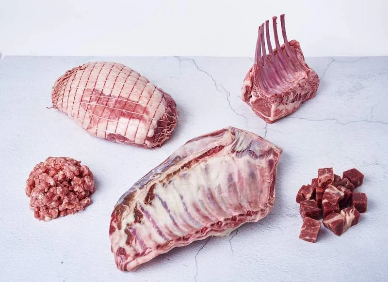

Lamb
Start with the cut and format your business needs. Discuss carcass, carton and cut requirements, along with quantities, packing and destination.
- Carcass enquiries
- Cuts & cartons
- Packing specifications
WHOLESALE & SPECIALIST TRADE
Explore the product, format and packing requirements for your next order.
03 THE WHOLESALE RANGE
Choose a product to explore formats, packing and the details for your next enquiry.

PRODUCT PHOTOGRAPHY IS ILLUSTRATIVECuts, carcasses & cartons
Start with the cut and format your business needs. Discuss carcass, carton and cut requirements, along with quantities, packing and destination.
Lamb selected
Illustrative range. Product availability, origins, specifications and export requirements are confirmed per enquiry.
04 PRODUCT ENQUIRIES
Availability and specifications are confirmed with our team for each enquiry.
5 product categories
Start with the cut and format your business needs. Discuss carcass, carton and cut requirements, along with quantities, packing and destination.
Explore bone-in and boneless mutton requirements. Tell us your preferred cuts, chilled or frozen format, quantities and packing needs.
Discuss lamb and mutton offal, with trimming, packing and temperature requirements shaped around your order and destination.
Grading, treatment, packing and destination requirements.
Frozen format, volume and packing enquiries.
LET’S START WITH YOUR REQUIREMENTS.
Your product. Your quantity. Your destination.
Bring us the details, and let’s explore the possibilities together.